ફોટો-ગેલરી
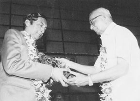 |
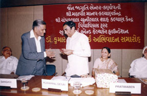 |
નાનુભાઈ સૂરતી ફાઉન્ડેશન દ્વારા સંસ્કૃતિ ગૌરવ એવોર્ડ |
જૈનદર્શનમાં મહત્ત્વનું પ્રદાન કરવા માટે એવોર્ અર્પણ કરતાં પ્રિ.આર.એલ. સંઘવી |
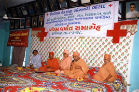 |
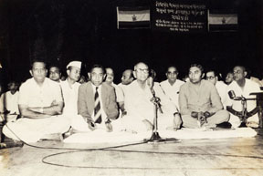 |
ઇન્ડિયન રેડક્રોસ સોસાયટી બોટાદના ઉપપ્રમુખ તરીકે આંખના ઓપરેશન થિયેટરના પ્રથમ વર્ષાન્ત સમારોહમાં |
જૈન શ્વેતામ્બર કોન્ફરન્સના પૂર્વ મંત્રી તરીકે મુંબઈના સમારોહમાં |
| 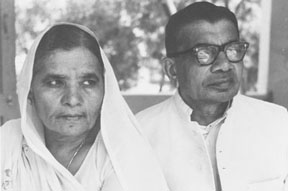 | 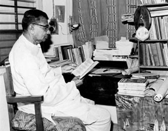 |
પિતા જયભિખ્ખુ અને માતા જયાબહેન |
સર્જન કાર્યમાં ડૂબેલા જયભિખ્ખુ |
| 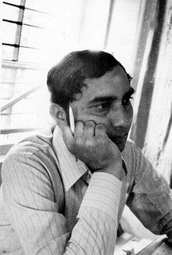 | 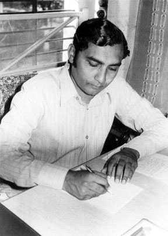 |
વિચારની ક્ષણોમાં |
લેખનકાર્ય કરતા ડૉ. કુમારપાળ દેસાઈ |
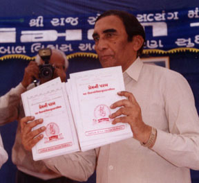 |
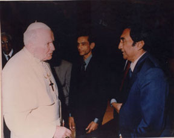 |
રાજસોભાગ આશ્રમ સાયલાના પુસ્તક પ્રેમની
પરબનું વિમોચન કરતા |
જૈનધર્મના પ્રતિનિધિમંડળ સાથે પોપ જ્હોન પોલ દ્વિતીયને મળતા ડૉ. કુમારપાળ દેસાઈ |
| 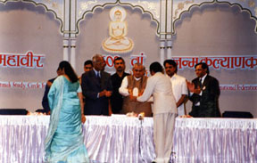 | 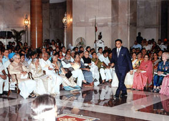 |
ભગવાન મહાવીરના 2600મા જન્મકલ્યાણક પ્રસંગે વડાપ્રધાન બાજપેઈજી જૈનરત્ન એવોર્ડ એનાયત કરે છે. |
રાષ્ટ્રપતિભવનમાં પદ્મશ્રી એવોર્ડ લેવા જતા ડૉ. કુમારપાળ દેસાઈ |
| 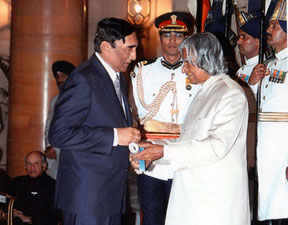 | 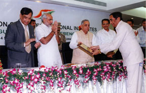 |
રાષ્ટ્રપતિ દ્વારા પદ્મશ્રીથી સન્માનિત |
ગુજરાતના રાજ્યપાલશ્રી નવલકિશોર શર્મા અને મુખ્યમંત્રી શ્રી નરેન્દ્ર મોદી દ્વારા સન્માન |
| 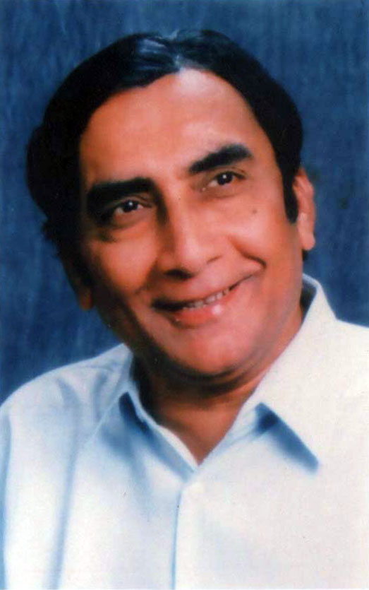 |